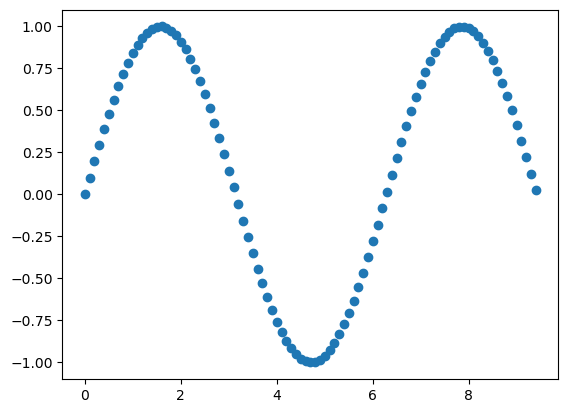
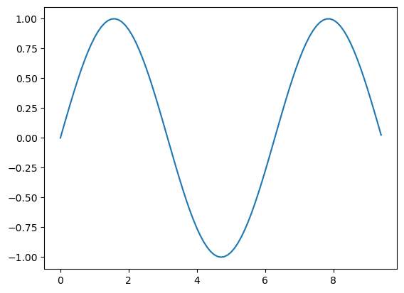
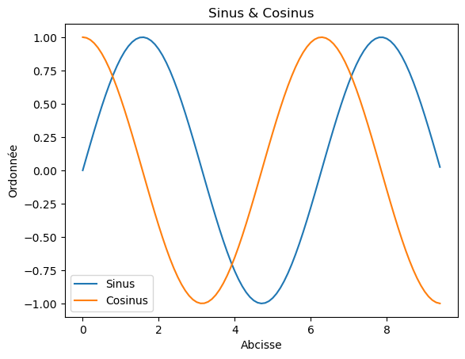
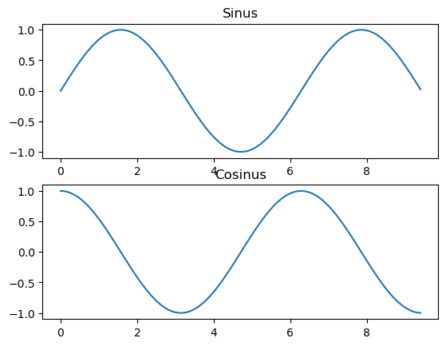
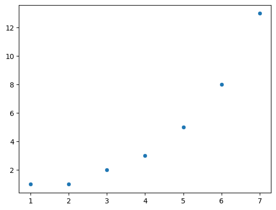
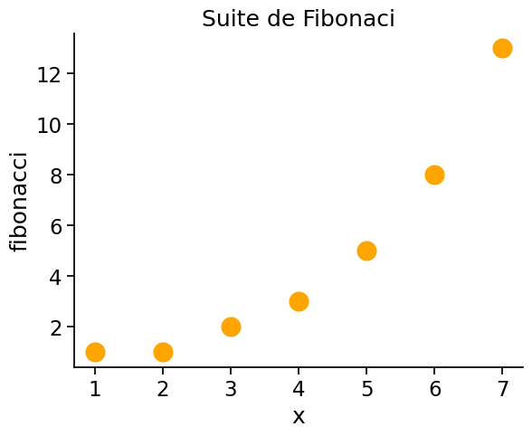
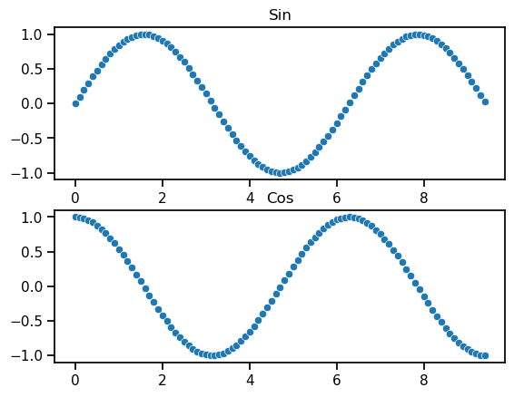

Numpy et Matplotlib#
Numpy est le noyau de bibliothèque de calcul scientifique en Python. Elle met à disposition un ensemble de fonctionnalités de gestion de matrice (appelé tableau dans numpy).
Pour utiliser cette bibliothèque, il est nécessaire d’importer le package numpy :
import warnings
warnings.simplefilter(action='ignore', category=FutureWarning)
import numpy as np
np correspond au préfixe que nous utiliserons pour adresser les fonctionnalités de la librairies dans notre code. Vous pouvez le considérer comme un espace de nommage. Si as np n’est pas précisé, alors le préfixe restera numpy.
Arrays#
Un tableau numpy est une grille de valeurs de mêmes types et indexées par un tuple d’entiers. On appelle shape le tuple d’entier qui correspond à la valeur de chacune des dimensions.
On peut initialiser un tableau numpy à partir d’une liste python. L’accès à ses éléments se fait par la notation [].
a = np.array([1, 2, 3]) # Création d'un tableau 1 dimension
print(type(a), a.shape, a[0], a[1], a[2])
a[0] = 5 # Modification de l'un des éléments
print(a)
<class 'numpy.ndarray'> (3,) 1 2 3
[5 2 3]
b = np.array([[1,2,3],[4,5,6]]) # Création d'un tableau à 2 dimensions
print(b)
b.shape
[[1 2 3]
[4 5 6]]
(2, 3)
print(b.shape)
print(b[0, 0], b[0, 1], b[1, 0])
(2, 3)
1 2 4
Numpy met plusieurs fonctions à disposition pour initialiser les tableaux
a = np.zeros((2,2)) # Création d'un tableau ne contenant que des 0
print(a)
[[0. 0.]
[0. 0.]]
b = np.ones((1,2)) # Création d'un tableau ne contenant que des 1
print(b)
[[1. 1.]]
c = np.full((2,2), 7.) # Création d'un tableau ne contenant que des 7.0
print(c)
[[7. 7.]
[7. 7.]]
d = np.eye(2) # Création d'un matrice unité de deux dimensions
print(d)
[[1. 0.]
[0. 1.]]
e = np.random.random((2,2)) # Création d'un tableau ne contenant que des valeurs aléatoires
print(e)
[[0.24499434 0.3996688 ]
[0.04536109 0.75955726]]
Indexation#
Numpy propose plusieurs façon de manipuler les données d’un tableau.
Slicing : Il est possible de découper un tableau en précisant la « tranche » à extraire sur chacune des dimensions du tableau.
import numpy as np
# Création d'un tableau à deux dimensions et de taille (3,4)
a = np.array([[1,2,3,4], [5,6,7,8], [9,10,11,12]])
print(a)
[[ 1 2 3 4]
[ 5 6 7 8]
[ 9 10 11 12]]
# On souhaite "trancher" le tableau pour récupérer les lignes jusqu'à 2 (2 exclu) et les colonnes de 1 à 3 (3 exclus)
b = a[:2, 1:3]
print(b)
[[2 3]
[6 7]]
Attention, b contient des références vers a ! Modifier le tableau b a pour conséquence de modifier les données de a.
print(a[0, 1])
b[0, 0] = 77 # b[0, 0] référence a[0, 1]
print(a[0, 1])
2
77
Remarques sur le slicing :
row_r1 = a[1, :] # Vue en une dimension de la deuxième ligne
row_r2 = a[1:2, :] # Vue en deux dimensions de la deuxième ligne
row_r3 = a[[1], :] # Vue en deux dimensions de la deuxième ligne
print(row_r1, row_r1.shape)
print(row_r2, row_r2.shape)
print(row_r3, row_r3.shape)
[5 6 7 8] (4,)
[[5 6 7 8]] (1, 4)
[[5 6 7 8]] (1, 4)
# Idem quand on accède aux colonnes :
col_r1 = a[:, 1]
col_r2 = a[:, 1:2]
print(col_r1, col_r1.shape)
print()
print(col_r2, col_r2.shape)
[77 6 10] (3,)
[[77]
[ 6]
[10]] (3, 1)
Modification d’un élément par ligne en utilisant l’indexation
# Le tableau d'origine
a = np.array([[1,2,3], [4,5,6], [7,8,9], [10, 11, 12]])
print(a)
[[ 1 2 3]
[ 4 5 6]
[ 7 8 9]
[10 11 12]]
# Ce tableau contient des indices qui vont être utilisés ensuite
b = np.array([0, 2, 0, 1])
# Utilise le tableau précédent afin de sélectionner un élément par ligne
print(a[np.arange(4), b])
[ 1 6 7 11]
# Modifie un élément par ligne en utilisant les indices de b
a[np.arange(4), b] += 10
print(a)
[[11 2 3]
[ 4 5 16]
[17 8 9]
[10 21 12]]
Boolean array indexing:
import numpy as np
a = np.array([[1,2], [3, 4], [5, 6]])
bool_idx = (a > 2)
print(bool_idx)
[[False False]
[ True True]
[ True True]]
# On peut construire un tableau de une dimension contenant les valeurs qui corresponent à l'indexation booléenne
print(a)
print(a[bool_idx])
# Le raccourci suivant est possible
print(a[a > 2])
[[1 2]
[3 4]
[5 6]]
[3 4 5 6]
[3 4 5 6]
# On peut sélectionner un élément sur deux d'un tableau
x = np.arange(0, 10)
print(x)
print(x[::2])
[0 1 2 3 4 5 6 7 8 9]
[0 2 4 6 8]
# La même chose, mais à partir du 4ème élément
x = np.arange(0, 10)
print(x)
print(x[3::2])
[0 1 2 3 4 5 6 7 8 9]
[3 5 7 9]
# Dans l'exemple précédent, 2 représente un incrément.
# En fournissant un incrément négatif, on indique qu'on veut commencer par la fin
x = np.arange(0, 10)
print(x)
print(x[::-2])
[0 1 2 3 4 5 6 7 8 9]
[9 7 5 3 1]
# Ce qui peut servir à inverser l'ordre d'un tableau
x = np.arange(0, 10)
print(x)
print(x[::-1])
[0 1 2 3 4 5 6 7 8 9]
[9 8 7 6 5 4 3 2 1 0]
Type des données#
Un tableau numpy contient des éléments du même type. Par défaut, c’est Numpy qui devine le type de vos données, mais vous pouvez l’aider en explicitant le type lors de la création :
x = np.array([1, 2]) # choisi par numpy
y = np.array([1.0, 2.0]) # choisi par numpy
z = np.array([1, 2], dtype=np.float64) # on force le type
print (x.dtype, y.dtype, z.dtype)
int64 float64 float64
Voir la documentation.
Calculs mathématiques sur les tableaux#
x = np.array([[1,2],[3,4]], dtype=np.float64)
y = np.array([[5,6],[7,8]], dtype=np.float64)
# Addition
print(x + y)
print(np.add(x, y))
[[ 6. 8.]
[10. 12.]]
[[ 6. 8.]
[10. 12.]]
# Différence
print(x - y)
print(np.subtract(x, y))
[[-4. -4.]
[-4. -4.]]
[[-4. -4.]
[-4. -4.]]
# Produits des éléments (ATTENTION : ce n'est pas un produit matriciel ! cf ci-dessous)
print(x * y)
print(np.multiply(x, y))
[[ 5. 12.]
[21. 32.]]
[[ 5. 12.]
[21. 32.]]
# Division membre à membre
print(x / y)
print(np.divide(x, y))
[[0.2 0.33333333]
[0.42857143 0.5 ]]
[[0.2 0.33333333]
[0.42857143 0.5 ]]
Produit matriciel
x = np.array([[1,2],[3,4]])
y = np.array([[5,6],[7,8]])
v = np.array([9,10])
w = np.array([11, 12])
print(x @ v)
print(np.dot(v, w))
print(w.dot(v))
print(x.dot(v))
print(np.dot(x, v))
[29 67]
219
219
[29 67]
[29 67]
Pour le calcul matriciel, il est préférable d’utiliser des vecteurs sous forme de matrices à une dimension
v = np.array([[9], [10]])
w = np.array([[11, 12]])
print(v)
print(v.T)
print(w)
[[ 9]
[10]]
[[ 9 10]]
[[11 12]]
print(v.dot(w))
print(w.dot(v))
print(v.T.dot(v))
[[ 99 108]
[110 120]]
[[219]]
[[181]]
On peut utiliser np.reshape pour convertir un array monodimensionnel en matrice à une dimension
u = np.array([9,10])
v = u.reshape(-1, 1)
w = u.reshape(1, -1)
print(u)
print(v)
print(w)
[ 9 10]
[[ 9]
[10]]
[[ 9 10]]
Plusieurs fonctions mathématiques sont disponibles sur un tableau :
x = np.array([[1,2],[3,4]])
print(np.sum(x)) # Somme de tous les éléments
print(np.sum(x, axis=0)) # Somme selon l'axe des lignes
print(np.sum(x, axis=1)) # Somme selon l'axe des colonnes
10
[4 6]
[3 7]
Voir la liste des fonctions utilisables.
Matplotlib#
Matplotlib vous permet de faire des graphique (plotting). Les lignes ci-dessous sont une rapide introduction au module matplotlib.pyplot.
import matplotlib.pyplot as plt
La ligne ci-dessous permet d’insérer les graphiques directement dans le notebook
%matplotlib inline
Graphiques#
La fonction centale de matplotlib est plot, qui permet de faire des graphiques en deux dimensions. Voici un exemple :
# on initialise deux séries qui feront office d'abcsisses et d'ordonnées:
x = np.arange(0, 3 * np.pi, 0.1) # valeurs allant de 0 à 9.4, avec un pas de 0.1
y_sin = np.sin(x)
# On affiche les points
plt.scatter(x, y_sin);

# On affiche la courbe
plt.plot(x, y_sin);

Quelques améliorations : ajout des noms aux différents axes
x = np.arange(0, 3 * np.pi, 0.1) # valeurs allant de 0 à 9.4, avec un pas de 0.1
y_sin = np.sin(x)
y_cos = np.cos(x)
# Afficher les courbes
plt.plot(x, y_sin)
plt.plot(x, y_cos)
plt.xlabel('Abcisse')
plt.ylabel('Ordonnée')
plt.title('Sinus & Cosinus')
plt.legend(['Sinus', 'Cosinus']);

Subplots#
Un figure peut contenir plusieurs graphiques. C’est la méthode subplot qui le permet
x = np.arange(0, 3 * np.pi, 0.1) # valeurs allant de 0 à 9.4, avec un pas de 0.1
y_sin = np.sin(x)
y_cos = np.cos(x)
# On déclare un grille avec un colonne et deux lignes
# Le dernier paramètre indique quelle est la zone active de la grille
plt.subplot(2, 1, 1)
# Première courbe
plt.plot(x, y_sin)
plt.title('Sinus')
# Deuxième courbe:zone 2 active
plt.subplot(2, 1, 2)
plt.plot(x, y_cos)
plt.title('Cosinus');

Plus de documentation
Seaborn#
Surcouche de matplotlib, permettant de simplifier l’utilisation de matplotlib
import seaborn as sns
y_fib = [1,1,2,3,5,8,13]
x_fib = range(1,len(y_fib)+1)
sns.scatterplot(x=x_fib, y=y_fib)
<Axes: >

seaborn offre de nombreuses possibilités de configuration
y_fib = [1,1,2,3,5,8,13]
x_fib = range(1,len(y_fib)+1)
# Seaborn définit le concept de "contexte", qui permet de définir des propriétés globales.
# Il existe quatre contextes: “paper”, “notebook”, “talk” et “poster”
# On change la taille des caractères dans le contexte "notebook"
sns.set_context("notebook", font_scale=1.5)
# Changer la taille des points et leur couleur
ax = sns.scatterplot(x=x_fib, y=y_fib, s=300, color='orange')
# "Décorer" le graphique
ax.set(title="Suite de Fibonaci", xlabel="x", ylabel="fibonacci")
# Supprimer le cadre en haut et à droite
sns.despine(top = True, right = True);

# On réinitialise la taille des caractères dans le contexte "notebook"
sns.set_context("notebook", font_scale=1)
x = np.arange(0, 3 * np.pi, 0.1)
y_sin = np.sin(x)
y_cos = np.cos(x)
# On déclare un grille avec un colonne et deux lignes
fig, axes = plt.subplots(2, 1)
ax1 = sns.scatterplot(x=x, y=y_sin, ax=axes[0])
ax2 = sns.scatterplot(x=x, y=y_cos, ax=axes[1])
ax1.set_title("Sin")
ax2.set_title("Cos")
Text(0.5, 1.0, 'Cos')
